메인영역
K Car Portfolio
직영 인증 시스템 기반의 중고차 플랫폼 케이카의 회사 소개 사이트를
브랜드 경험 중심으로 재설계한 3인 팀 프로젝트입니다.
프로젝트 개요
직영 인증 시스템을 기반으로 안전하고 투명한
중고차 거래 경험을 제공하는 플랫폼
K Car의 중고차 거래 자체가 자원 재사용과 순환 소비라는 ESG 가치와 연결되지만, 기존 사이트에서는 이 점이 충분히 드러나지 않아 콘텐츠 구조, 시각적 표현, 인터랙션 요소를 개선하여 브랜드 경험을 시각적으로 보여주고자 리디자인 프로젝트로 선정하게 되었습니다.
기존 사이트 분석
기존 구조
- 기업 정보 중심의 단조로운 레이아웃으로 브랜드 경쟁력이 직관적으로 전달되지 않음
- 텍스트와 정적인 이미지 위주의 콘텐츠 구성으로 사용자 몰입도가 낮음
- 서비스 정보와 CTA가 분산되어 있어 사용자 행동 유도가 부족함
리뉴얼 방향
- 브랜드 아이덴티티를 강조한 비주얼과 핵심 메시지 중심의 메인 화면으로 개선
- 스크롤 인터랙션과 모션 효과를 활용하여 콘텐츠 탐색 경험과 몰입감 향상
- 서비스 특징을 카드형 UI로 재구성하고 명확한 CTA를 배치하여 사용성 및 전환율 개선
프로젝트 타겟
자동차에 관심이
많은 성인
- 경제성과 신뢰를 우선하는 현실 소비층
- 차량 구매 시 가격뿐 아니라 품질과 정보 투명성을 중시
- 환경까지 고려한 합리적 소비에 공감 가능한 세대
핵심 니즈
- 신뢰할 수 있는 차량 · 기업 정보 확인
- 합리적이면서 가치 있는 소비라는 확신
- 직관적인 메뉴와 빠른 정보 탐색
사용자 시나리오
- SNS · 검색 유입 — 메인 페이지 진입 후 기업 소개 확인
- 정보 탐색 — 서비스, ESG, 채용 정보 확인
- 최종 행동 — K Car를 단순 중고차 플랫폼이 아닌 신뢰 가능한 ESG 소비 플랫폼으로 인식
프로젝트 목표
기업의 경영철학을 직관적으로 전달하고
기술역량을 포함한 핵심서비스 소개
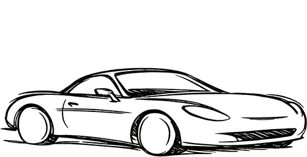
와이어프레임
그리드 시스템 및 반응형 기준
PC
width 1920px · 12cols
columns 129px · margin 96px
Tablet
width 768px · 8cols
columns 83px · margin 15px
Mobile
width 430px · 5cols
columns 70px · margin 16px
와이어프레임 | Desktop
브랜드 소개 → 사업분야 → 지속가능경영 → 채용 / IR로 이어지는 정보 흐름에 대한 와이어프레임 설계
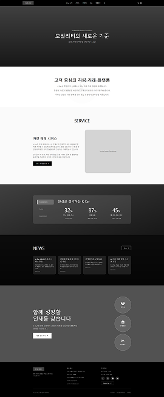
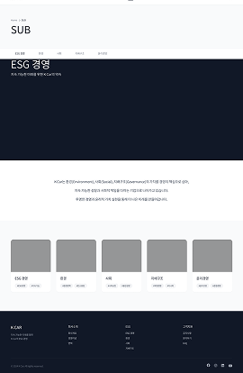
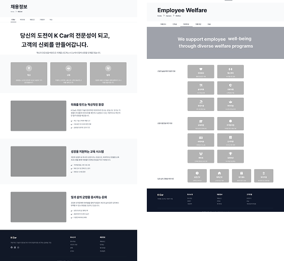
영상 스토리보드
↓ ESG 방향으로 영상 수정
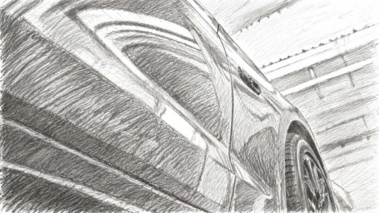
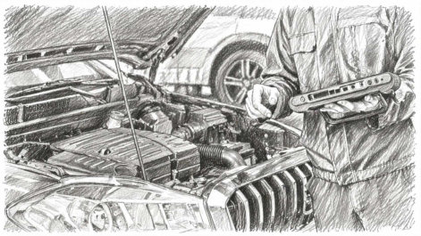
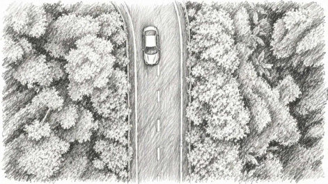
디자인 시스템
Typography — 브랜드의 신뢰성과 기술적 이미지를 동시에 전달
Asta Sans
: 현대적 / 기술적 / 신뢰감Asta Sans Extra Bold
Pretendard Variable
: 가독성 / 안정성 / 폴백가나다라마 123
| 영상 텍스트 | Asta Sans Extra Bold | 96px |
| 타이틀 | Asta Sans Extra Bold | 56pt |
| 본문 | Asta Sans Medium | 16pt |
Color System
K Car Red
#D82631 · 에너지와 역동성
Black
#1A1A1A · 시크함
White
#FFFFFF · 깔끔함
Desktop
Main page : 브랜드 → 사업분야 → ESG로 이어지는 흐름을 하나의 화면 내에서 경험하도록 구조 설계
Sitemap : 전체 메뉴를 한 화면에 보여주어 구조를 직관적으로 인지할 수 있도록 설계
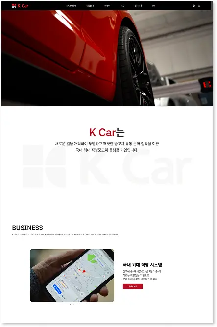
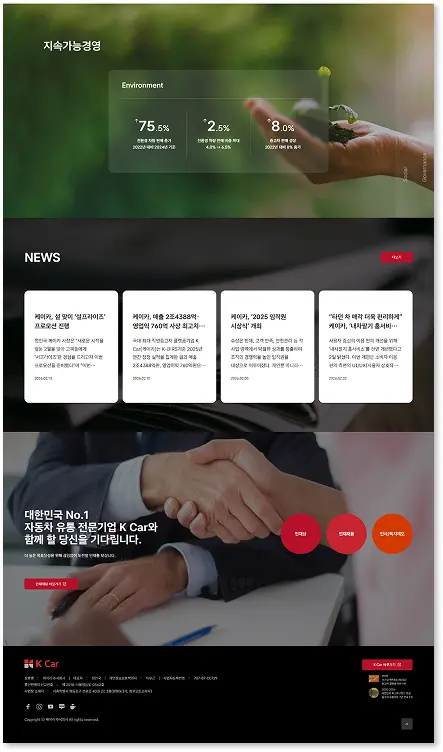
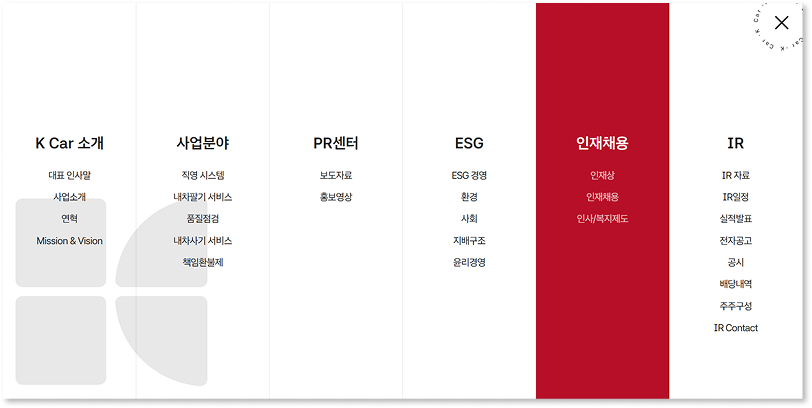
Tablet
Main page : 카드·텍스트 간격을 재조정, 정보 유지, 가독성 강화
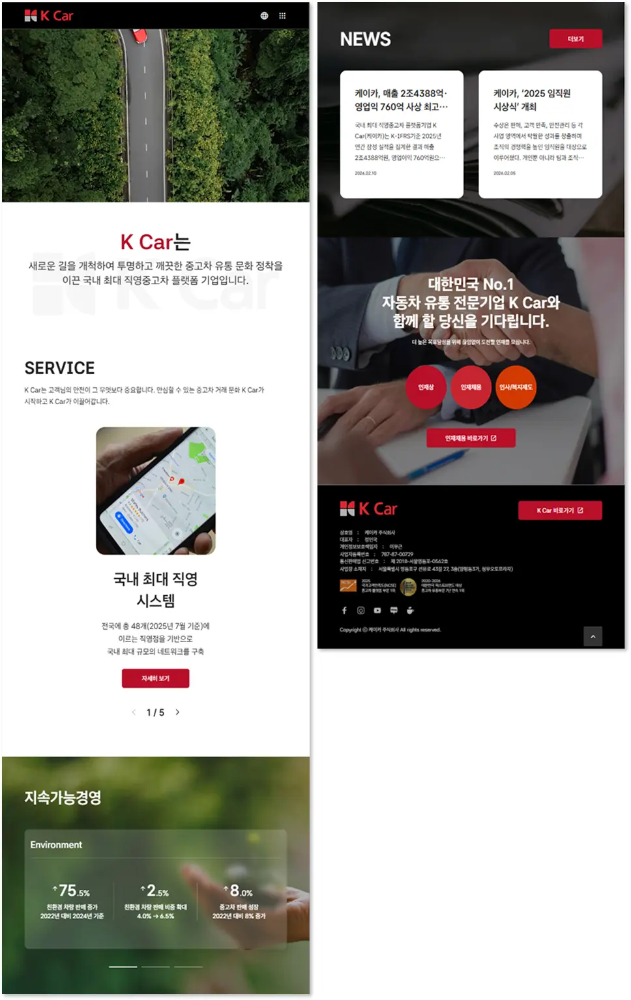
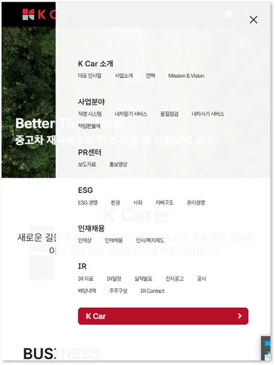
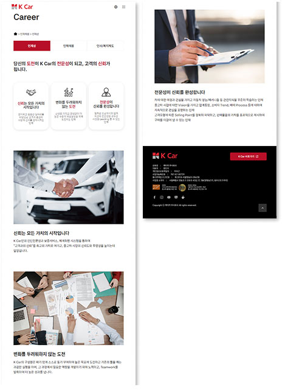
Mobile
Main page : 텍스트 밀도 축소, 핵심 메시지가 먼저 보이도록 구조 재구성 · Sitemap : 빠른 접근을 위해 단계형 메뉴 구조로 설계
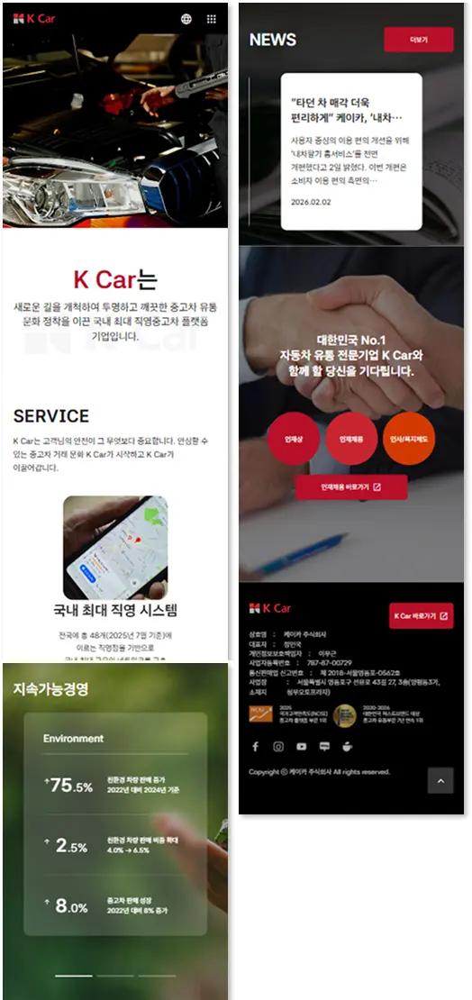
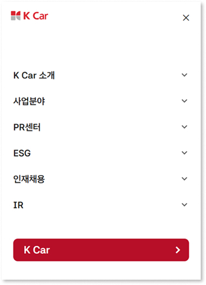
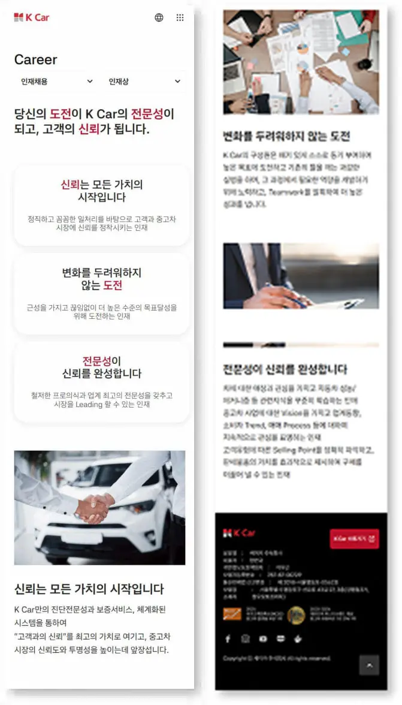
프로젝트 활용 툴
기획 / 협업
디자인 / 영상
퍼블리싱 / 배포
AI 활용
프로젝트 팀 구성 및 역할
기획, 디자인, 퍼블리싱, 영상 제작을 통합적으로 수행한 협업 프로젝트
이다은 팀장
- 메인 페이지 자료 수집 및 구성
- 메인 페이지 디자인
- 메인 페이지 HTML, CSS 반응형 웹 디자인 진행
- 영상 시나리오 작성 · 자료 수집 · 영상 제작
김승원
- 기획안 · 회의록 작성
- 서브 메뉴 정리
- 코딩 환경 구축 후 소스 배포
- 서브 페이지 HTML, CSS 반응형 웹 디자인 진행
최지원
- GitHub 기반 형상 관리
- 메인, 사이트맵, 서브 공통, 인재채용 페이지 자료 수집 및 디자인
- 서브 페이지 및 사이트맵 HTML, CSS 반응형 웹페이지 개발
- 페이지 전체 이슈 관리 및 코드 정리